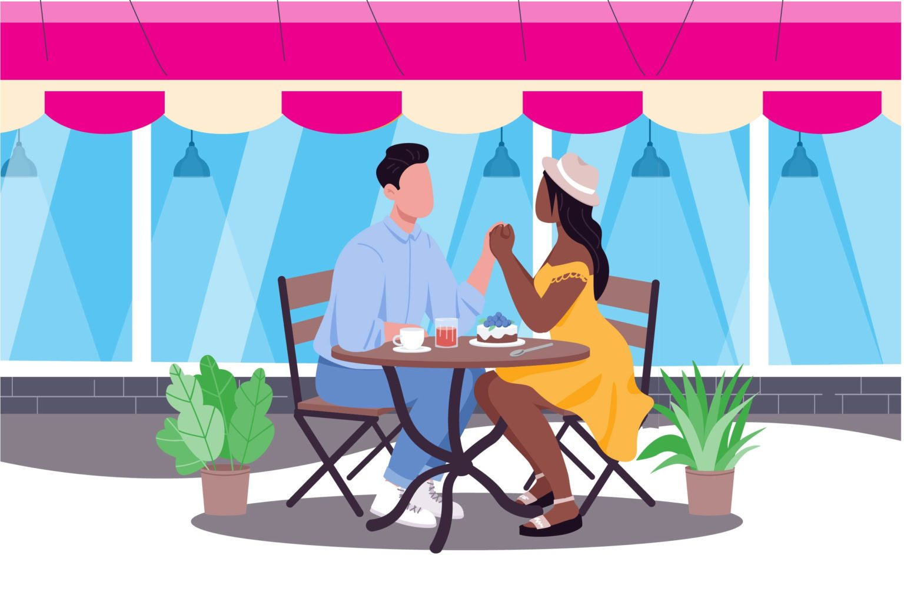
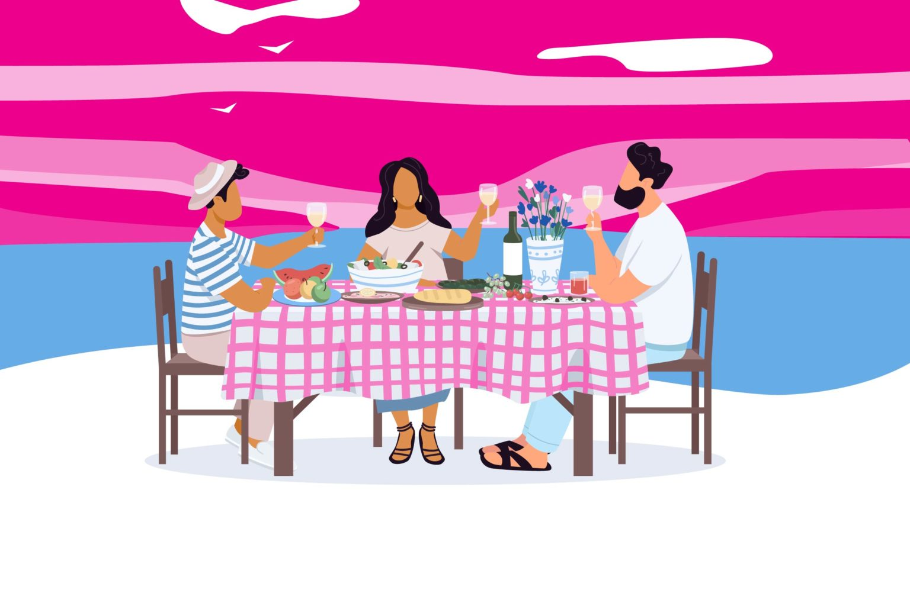
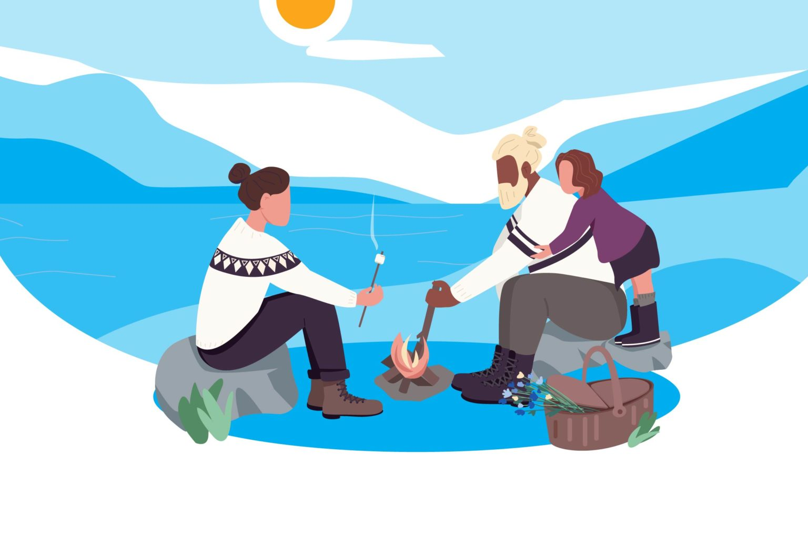

How to Strengthen Loving Relationships with Mindfulness
Mindful Staff || February 3, 2021

Our guide to reflecting on the relationships in your life and opening yourself up to
the opportunity for love to grow.
You don’t have to wait for Valentine’s day to pause and reflect on the relationships
you value in your life. Whether it be with colleagues, friends, lovers, or a spouse,
you can always benefit from taking a step back, appreciating the love you have in your
life and making the time to show others you care about them.
When you are mindful of the love in your life you open yourself up to the opportunity for
love to grow. And not just romantic love, but self-love, and loving friendships as well.
"
A life that maximizes social interaction
is good for the brain.
"
The Benefits of Healthy Relationships
Louis Cozolino, professor of psychology at Pepperdine University,
is deeply engaged with another idea. In Cozolino’s book, Timeless:
Nature’s Formula for Health and Longevity, he emphasizes the positive
impact of human relationships.feel.
“Of all the experiences we need to survive and thrive, it is the
experience of relating to others that is the most meaningful and
important,” he writes.
Since the publication of Cozolino’s earlier book, The Neuroscience
of Human Relationships, the field of social neuroscience has expanded
tremendously. We now know that people who have more social support tend
to have better mental health, cardiovascular health, immunological functioning,
and cognitive performance.
3 Simple Ways to Strengthen Your Relationships

Research backs this up, suggesting that positive relationships can help us succeed,
grow, and become better people. Romantic partners often encourage and support one another
toward shared goals. When parents are highly involved in school, their children tend to do
well academically. And positive support from friends, especially during adolescence and
early adulthood, can encourage us to be more empathic and helpful toward others.
1. Start with kindness
Kindness is like a magnet. People like to be around others who are kind because they
feel cared about and safe with them. The Golden Rule, “Do unto others as you would want
them to do to you” still rings true today.
2. Let go of toxic people
Take an inventory of your relationships to get a sense of who’s nourishing you and
who’s depleting you. A strong relationship will make you feel comfortable, confident,
and fully supported.
3. Focus on similarities, not differences
If you want to foster a greater sense of connection in your life, it’s helpful to
think of what we share as human beings—even with the people you might not always
see eye to eye on.

Having strong relationships is one of the single greatest predictors of wellness, happiness, and longevity.
And our connections flourish when we take time to get to know ourselves, and others, better.